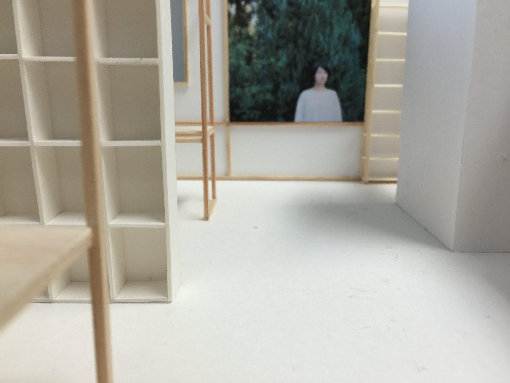
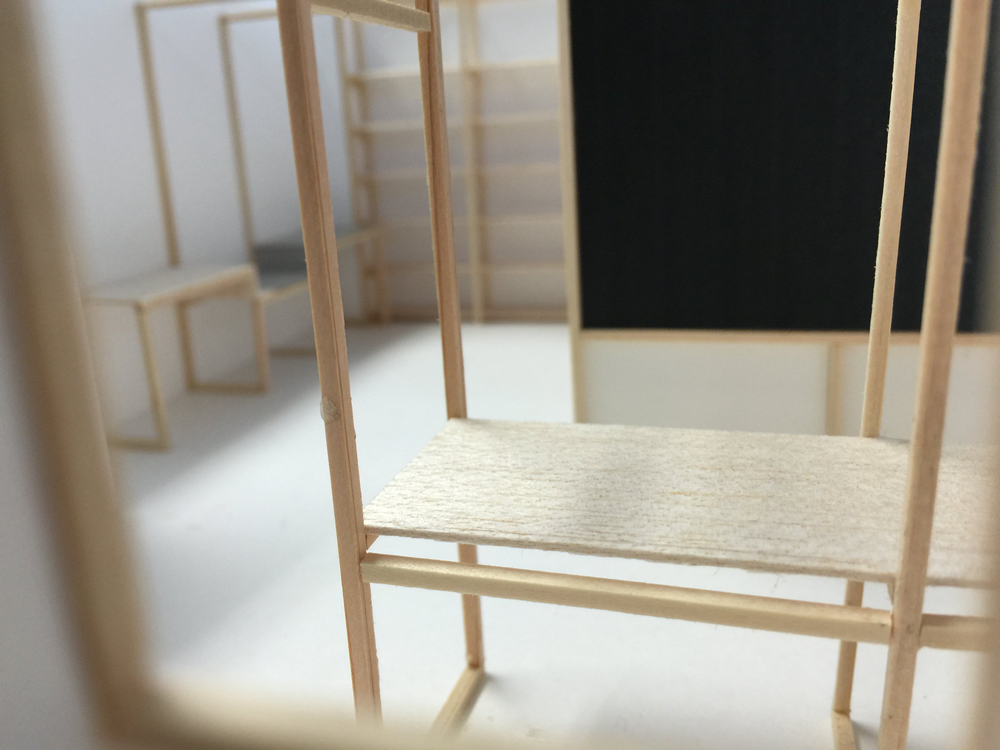
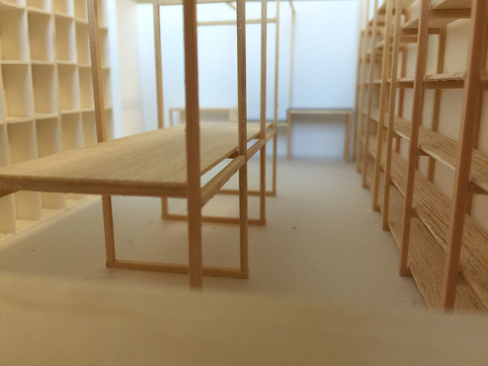

事務所を改装する計画が持ち上がったのはDESIGNEAST 05 CAMP in Hamamatsuが終わったころだろうか。実行委員として一緒に動いていた+ticが手を挙げてくれたのだ。
ゆっくりと話をすすめてきたとはいえ、いよいよ模型も仕上がりほぼ確定した。DESIGNEASTやドライブインシアターの企画でフル稼働していた事務所も落ち着いてきたので、12月から本格的に施工する予定。iPhone6 Plusで撮影したら+ticの2人が面白がってくれたので。このブログにもいくつか掲載しておく。
iPhone6 Plusは大きいけど薄いから模型の隙間に潜り込んで撮れる。ジオラマに夢中になってた幼少期のころに戻った気分になれて楽しいですよ。
 俯瞰したところ。柱や窓の凹凸の四辺を手掛かりにレイアウトがくまれている。柱は45×45の杉材。窓際にも板を通してフリーアドレスな作業スペースにもなるそうです。
俯瞰したところ。柱や窓の凹凸の四辺を手掛かりにレイアウトがくまれている。柱は45×45の杉材。窓際にも板を通してフリーアドレスな作業スペースにもなるそうです。
 あの浜名湖花博2014で展示されていたharucameraの写真も、杉材のフレームに見事に納まりました。（BGMに劇的なやつが流れてしまう…）
 事務所スペースはブラックボード。床がカーペットだから粉物のチョークで汚れないようにという配慮から。そして奥にあるのは水回り。シンクだけ最利用するとのこと。（BGM…）
 最後は肝心の作業スペース。机はずっと広くなって6名までは作業可能に。シェアオフィスできちゃいます。まだキッチン側にスペースがあるので伸ばせば+2名。夢があります。
今借りているビルのオーナーさんもとっても寛大な方で大変感謝しています。浜松にはちょっと古めのビルがまだまだ残っているので、その残っている価値を大切にしながら上手く活用できるといいな。匠の+ticさま、引き続きよろしくお願いいたします！
ちなみに事務所は静岡県浜松市中区 田町326−25 KJスクエア3F。お世話になっている美容室enn:のすぐ裏。髪を切りたくなったら徒歩1分なので最高です。enn:の三展ビルの2階にもEEが移転してくる準備中なのでこちらも是非。